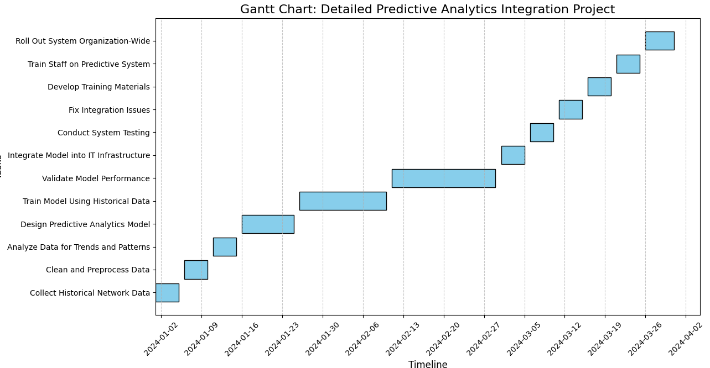

Client Background
Single Point of Contact (SpOC)
The client is represented by the Project Manager of a UK-based network service provider specializing in high-speed internet and digital communication services. The Project Manager plays a pivotal role as the primary liaison between the consultancy team and the organization, ensuring that all project updates, requirements, and milestones are communicated effectively. They oversee the coordination of multiple departments, including IT, customer support, and network operations, to align project objectives with the company’s strategic goals. Additionally, the Project Manager ensures that all stakeholders, including employees, suppliers, and regulatory authorities, are engaged and informed throughout the project lifecycle. This role is critical to maintaining seamless collaboration and achieving the desired outcomes for the client.

Client Role Summary
The Project Manager holds a key position within the organization, overseeing critical network operations and ensuring the seamless functioning of the company’s IT infrastructure. Their primary responsibility is to maintain operational continuity, ensuring that all systems function optimally to meet customer demands and business objectives. In this role, the Project Manager acts as a vital link between different stakeholder groups, including employees, suppliers, and regulatory bodies. They are instrumental in managing supplier relationships to ensure the timely delivery of resources and compliance with service level agreements. Additionally, their role requires regular communication with regulatory authorities to ensure the organization adheres to all legal and industry standards. Their decisions have a direct impact on several business drivers: Customer Satisfaction: Ensuring reliable network performance and addressing service issues promptly. Operational Efficiency: Streamlining IT processes to reduce downtime and optimize resource utilization. Financial Performance: Managing budgets for network upgrades and ensuring cost-effective operations. By balancing these responsibilities, the Project Manager plays a critical role in achieving the organization’s strategic objectives and delivering high-quality services to customers.
Organizational Overview
The client operates in the highly competitive telecommunications industry, delivering essential services such as high-speed internet, mobile connectivity, and digital communication solutions to a diverse clientele. These services cater to a wide range of customers, including small and medium-sized enterprises (SMEs), large enterprise-level organizations, and residential households. The company is well-established and has positioned itself as a leader in the market, emphasizing innovation, reliability, and customer satisfaction. Its operations are supported by a robust infrastructure designed to ensure seamless service delivery. The organization has adopted a customer-centric approach, tailoring its offerings to meet the unique needs of its clients, ranging from high-bandwidth solutions for enterprises to cost-effective plans for small businesses and households. The internal structure of the organization is built around three critical departments: Network Operations: This department is responsible for managing the company’s network infrastructure, ensuring minimal downtime, and maintaining high-speed connectivity. Their responsibilities include monitoring network performance, resolving technical issues, and implementing upgrades to keep pace with industry advancements. Customer Support: The customer support team serves as the first point of contact for clients, addressing inquiries, resolving service-related issues, and ensuring customer satisfaction. The team plays a vital role in retaining customers by providing timely and effective solutions to their concerns. IT Infrastructure: This department oversees the backbone of the organization’s technology framework, managing data centers, servers, and software systems that support service delivery. Their responsibilities include implementing security protocols, optimizing IT resources, and enabling innovative technologies like predictive analytics and automation.
Business Drivers
The main business drivers for the client include:
- Improved Customer Satisfaction: Consistent uptime to build customer loyalty.
- Increased Financial Profitability: Streamlined processes to reduce costs and increase revenue.
- Enhanced Operational Efficiency: Automation and digitization for faster issue resolution and higher productivity.
Working Environment
The client’s daily operations include monitoring network performance, addressing outages, and ensuring all systems are functioning seamlessly. Monthly tasks include analyzing metrics, planning upgrades, and training staff on new tools and technologies.

Project Introduction
The project focuses on integrating predictive analytics into the client’s network operations to enhance
reliability and performance. This initiative aligns with the client’s business drivers by minimizing
network outages, improving customer satisfaction, and increasing operational efficiency.
Objectives
The project aims to proactively identify potential network failures using predictive analytics,
reducing unplanned downtimes and ensuring seamless service delivery. This enhances network reliability,
streamlines maintenance, and optimizes resource allocation.
Addressing Key Risks
Unplanned
Downtime: Predictive systems will mitigate disruptions, ensuring consistent service delivery.
Project Scope & Exclusions
Scope
The project involves the following key activities, each critical to ensuring the success of the predictive analytics initiative:
- Analysis of Historical Data:
- Conduct an in-depth study of historical network performance data to uncover patterns and trends that commonly precede network failures.
- This process will involve collecting and cleaning large datasets, ensuring the data is accurate and complete.
- The insights gained from this analysis will serve as the foundation for developing a predictive model capable of identifying early warning signs of potential failures.
- Development of a Predictive Analytics Model:
- Utilize advanced machine learning algorithms to build a robust predictive model capable of analyzing real-time network data and forecasting potential failures.
- The model will leverage past failure patterns to predict future risks, enabling proactive interventions.
- This phase includes rigorous testing to validate the model's accuracy and reliability before integration into the client’s systems.
- Staff Training and Adoption:
- Develop a structured training program for the client’s technical team to ensure seamless adoption of the new system.
- Training sessions will cover key aspects, including navigating the system interface, interpreting predictive insights, and responding effectively to automated alerts.
- A focus on user-friendly tools and processes will empower the team to maximize the system’s potential.
- Monitoring and Refinement:
- Following implementation, the predictive system will undergo continuous monitoring to ensure optimal performance.
- Feedback from users will be gathered regularly to identify areas for improvement.
- Iterative refinements will be made to adapt the system to evolving network demands and address any unforeseen issues, ensuring long-term reliability and scalability.
Exclusions
To maintain a clear and focused scope, certain areas are explicitly excluded from this project:
- Hardware Upgrades or Replacements:
- The project does not include the replacement or upgrading of physical network hardware, as these tasks involve separate budgeting and resource allocation.
- Any necessary hardware adjustments will be addressed in a separate initiative managed by the client’s internal teams.
- Customer-Specific Customizations:
- While the predictive model is designed to improve network reliability, it will remain generalized for application across the entire network.
- Individual customer-specific customizations, such as tailored alerts or bespoke configurations, are excluded to ensure the solution remains scalable and cost-effective for the client’s broader network.
Data Model & Analysis Hypothesis
External Data Security Legislation
The project complies with GDPR, ensuring customer data is anonymized and securely handled.
Internal Data Security Standards
The organization employs data encryption, access controls, and regular audits to maintain compliance.
Principles of Data Classification
- Public Data: Network usage statistics.
- Administrative Data: Operational logs for internal use.
- Research Data: Anonymized customer data for analytical purposes.
Ethical Aspects and Considerations
Privacy, anonymization, and confidentiality are prioritized, with robust protocols in place to mitigate risks.
Data Analysis Hypothesis
The hypothesis is that analyzing historical network data will reveal patterns that predict failures, enabling proactive resolution.

Fact and Dimension Tables
| Type | Description | Example Data | Purpose |
|---|---|---|---|
| Fact Table | Stores measurable metrics related to network performance and failures, including counts and durations of outages, error rates, and downtime events. |
|
|
| Dimension Tables | Provides descriptive attributes to categorize and filter data in the fact table, aiding in deeper analysis and reporting. |
|
|
RACI Matrix
| Task | Responsible | Accountable | Consulted | Informed |
|---|---|---|---|---|
| Model Development | Data Scientist | Project Manager | IT Staff, Data Analytics Team | Senior Management, Network Operations Team |
| Data Collection and Preparation | Data Engineer | Project Manager | IT Staff, Network Operations Team | Senior Management |
| System Integration | System Integration Specialist | Project Manager | IT Infrastructure Team, Software Developers | Senior Management, Network Operations Team |
| Staff Training | Training Lead | Project Manager | IT Support, HR Team | Employees, Senior Management |
| Monitoring and Refinement | Data Scientist | Project Manager | IT Infrastructure Team, Network Operations Team | Senior Management |
| Risk Management and Mitigation | Risk Manager | Project Manager | Data Scientist, IT Staff | Senior Management |
Communication Plan
- Channels: Weekly Zoom meetings and email updates.
- Frequency: Weekly updates to the team, monthly stakeholder reports.
- Stakeholders: Project team, senior management, and IT department.
Key Milestones and Timelines
- Data Collection and Preparation: Gather and preprocess historical data to identify trends and failure patterns. This includes data cleaning, filling missing values, and analyzing historical logs for actionable insights. Visualization tools are utilized to detect recurring issues, forming the foundation for predictive modeling.
- Model Development and Testing: Build and validate a predictive analytics model using advanced algorithms. This involves training the model with historical data, tuning hyperparameters for optimal performance, and testing it against unseen data to ensure accuracy and reliability. Key metrics such as accuracy, precision, and recall are monitored.
- System Integration: Integrate the predictive model into the client’s IT infrastructure and conduct system testing. Real-time data pipelines are implemented, and integration testing is performed to ensure seamless functionality. Failover mechanisms are established to maintain system continuity during the rollout.
- Staff Training and Implementation: Train staff on using the system and roll it out organization-wide. Role-specific training modules, workshops, and practical exercises are conducted to ensure proficiency in navigating the predictive system, interpreting insights, and responding to alerts. Feedback is collected to refine training delivery.
Gantt Chart
Below is the visual representation of the project milestones and timelines:
Project Risk Register
| Risk | Likelihood | Impact | Mitigation Strategy |
|---|---|---|---|
| Data Quality Issues | Medium | High |
|
| Technical Failures | Medium | High |
|
| Staff Availability Issues | Low | Medium |
|
| Budget Constraints | Medium | High |
|
| Regulatory Compliance Risks | Low | High |
|
| Integration Challenges | Medium | High |
|
Early Warning Indicators
-
Anomalies in Data Trends:
- Definition: Anomalies refer to unexpected patterns or deviations in network performance data that fall outside the normal operational range. These could include sudden spikes in latency, drops in bandwidth usage, or increased error rates in specific network components.
- Potential Causes:
- Data Quality Issues: Missing, incomplete, or corrupted data may lead to inaccurate trend detection.
- System Malfunctions: Faulty sensors or logging mechanisms might produce erroneous data points.
- Environmental Factors: External factors like weather conditions or power outages could influence network behavior, causing anomalies.
- Impact: Failing to address anomalies can result in delayed detection of network failures, leading to unplanned downtimes and decreased customer satisfaction.
- Mitigation: Implement automated anomaly detection mechanisms to flag irregularities in real-time. Use statistical techniques or machine learning models like Isolation Forest or DBSCAN for early identification.
-
Delays in Model Training and Testing:
- Definition: Delays in the development process, particularly during the training and testing phases of the predictive analytics model, can hinder project timelines and reduce system readiness for deployment.
- Potential Causes:
- Data Challenges: Insufficient or poor-quality historical data can slow down preprocessing and feature engineering.
- Resource Constraints: Limited computational resources, such as insufficient processing power or memory, may extend the time required for training models.
- Algorithmic Issues: Overfitting, underfitting, or difficulty in achieving convergence during training can require additional iterations and debugging.
- Team Availability: Unavailability of key personnel, such as data scientists or IT staff, can impede progress.
- Impact: Prolonged timelines can affect project deliverables, stakeholder confidence, and the ability to meet operational deadlines. This can also delay the resolution of current network challenges.
- Mitigation:
- Use scalable cloud-based solutions to accelerate training with high-performance computing resources.
- Conduct regular progress reviews and establish checkpoints to identify and resolve bottlenecks promptly.
- Allocate additional team members or resources during critical phases to maintain momentum.
- Focus on incremental model development, starting with simple algorithms before progressing to more complex solutions.
Client Project Reflection
The integration of predictive analytics into the client’s network operations represents a
transformative
step in enhancing service delivery. By proactively addressing network failures, the client
can
significantly improve customer satisfaction, boost operational efficiency, and strengthen
profitability.
This initiative not only addresses immediate technical challenges but also positions the
client as an
industry leader in leveraging data-driven solutions.
Ethical considerations, such as data privacy and anonymization, are fundamental to this
project.
Ensuring inclusive stakeholder engagement has been a cornerstone, reflecting the importance
of
transparency and collaboration in achieving sustainable results.
The structured approach defined in the project scope ensures a clear roadmap while
maintaining the
flexibility to adapt to unforeseen challenges. With continuous collaboration and stakeholder
feedback,
this project underscores the importance of innovative yet ethical practices in meeting the
client’s
objectives effectively and sustainably. This holistic approach provides a robust foundation
for the
client’s long-term success.